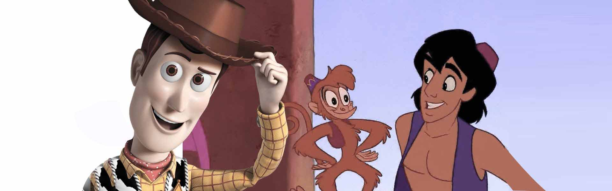

Bem-vindo
Animação DigitalA animação é uma das formas mais fascinantes da multimédia. Ao longo das décadas, a forma como os filmes de animação são criados mudou completamente: passámos do desenho quadro a quadro à mão, até aos modelos tridimensionais gerados por computador.
Este sítio Web apresenta a evolução da animação, desde o 2D tradicional até às técnicas atuais de 3D digital, abordando a história, as técnicas, os estúdios e os filmes que marcaram diferentes gerações.

O que vais encontrar
- A história da animação e as suas principais fases;
- As diferenças entre as técnicas 2D e 3D;
- Estúdios e filmes conhecidos;
- Filmes clássicos em 2D;
- Filmes modernos em 3D.
- Um formulário de contacto.